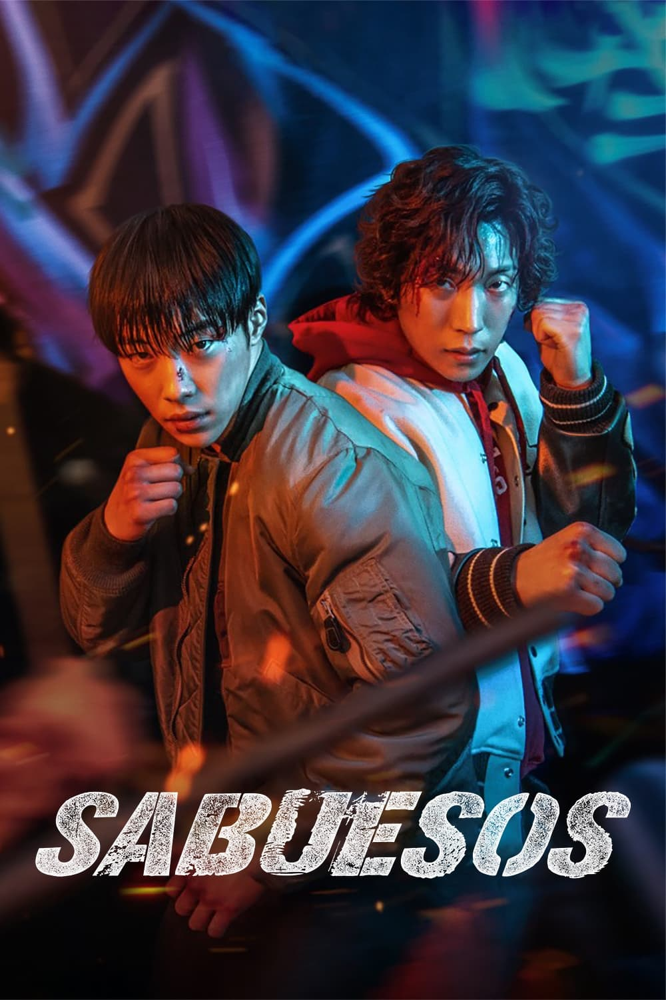
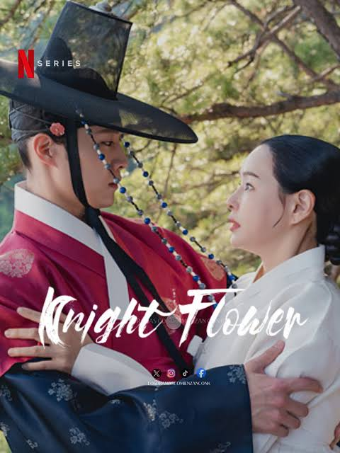
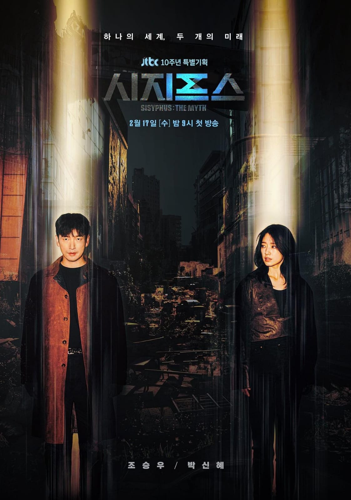
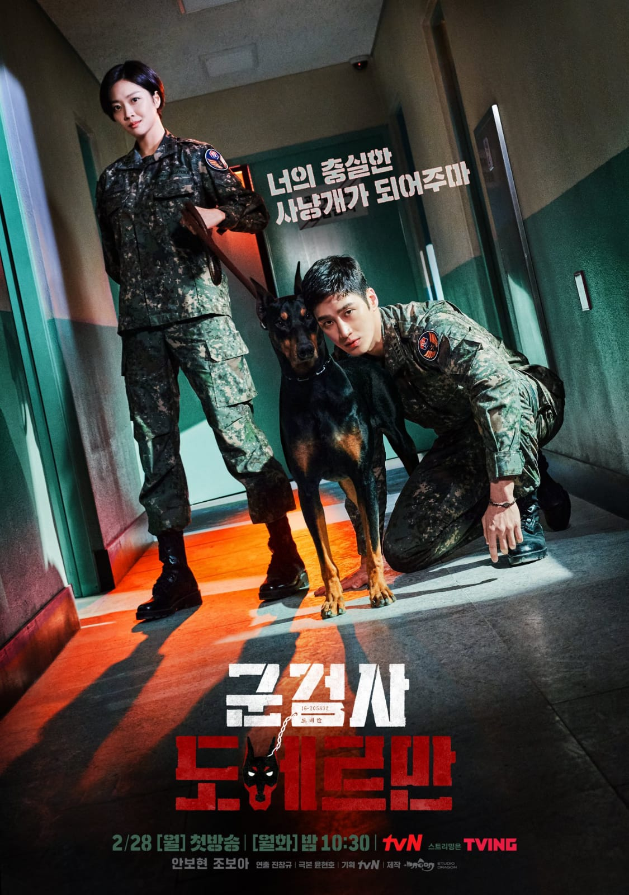
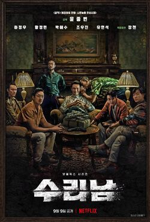

Las mejores series de accion coreanas de los últimos años
1. Sabuesos.
2. Flor de caballero.
3. El mito de sisofo
4. Sanador
5. Fiscal militar doberman.
6. La flor del mal.
7. Narcosantos.
8. Dulce hogar.

1. Sabuesos.
2. Flor de caballero.
3. El mito de sisofo
4. Sanador
5. Fiscal militar doberman.
6. La flor del mal.
7. Narcosantos.
8. Dulce hogar.
Dos jóvenes boxeadores unen fuerzas con un benévolo prestamista para destruir a un despiadado usurero que se aprovecha de los más vulnerables.

Viuda de día y justiciera enmascarada de noche, Yeo-hwa lleva una doble vida, hasta que se topa con un superintendente en una casa de apuestas. El ministro Yeom castiga a un trabajador por ensuciar su preciada obra de arte. Como respuesta, Yeo-hwa cambia la valiosa pintura por una hecha por ella.

el castigo de Sísifo, rey de Corinto, por engañar a los dioses. El mito es una metáfora de la vida humana, que abruma a las personas con pruebas difíciles.

Los ambiciosos planes de poder y riqueza de un fiscal del ejército se ven frustrados por una novata inquebrantable que tiene sus propios objetivos.

Un hombre esconde su retorcido pasado tras la apariencia del marido perfecto de una detective hasta que su esposa empieza a investigar una serie de asesinatos.
Un empresario normal y corriente participa en una misión secreta del Gobierno para capturar a un narcotraficante coreano que opera en Sudamérica. Basada en hechos reales.
